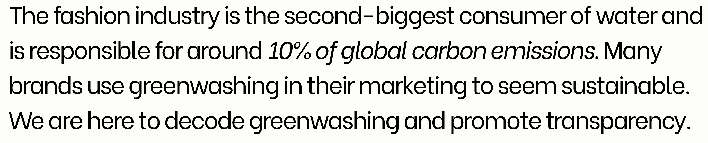
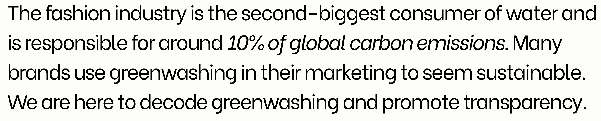

THE FABRIC BLEND & ITS
THE FABRIC BLEND & ITS
 CARBON FOOTPRINT.

CARBON FOOTPRINT.

Why look at the fabric label?
Clothing quality and sustainability changes between brands and
within a brand. Despite a brand’s sustainable identity, it does not
accurately reflect the quality of every piece of clothing they sell.
By taking a closer look at the fabric label, we can objectively
measure the carbon footprint of each piece of clothing.
Many fast fashion brands now use synthetic fibres like polyester,
nylon and acrylic which take hundreds of years to biodegrade. These
fibres also release microplastics every time you put them in the
wash and it is estimated to contribute to 35% of all microplastics
in the ocean.
Sustainable fabrics use less water and less energy-intensive
processes while being more durable. The choice to purchase clothing
pieces in a sustainable fabric can make a significant difference to
our earth.
Read more:
OUR MISSION
By using decode, you can
Just enter the URL and we’ll take care of finding the information.
We’ll tell you the sustainability score.
List of questions to ask before making the purchase.
 before you shop.
before you shop.
Before adding to your cart, use our extension to learn about the materials and care information for your clothing of choice. Choose pieces that will spend a lifetime in your closet instead of a landfill.